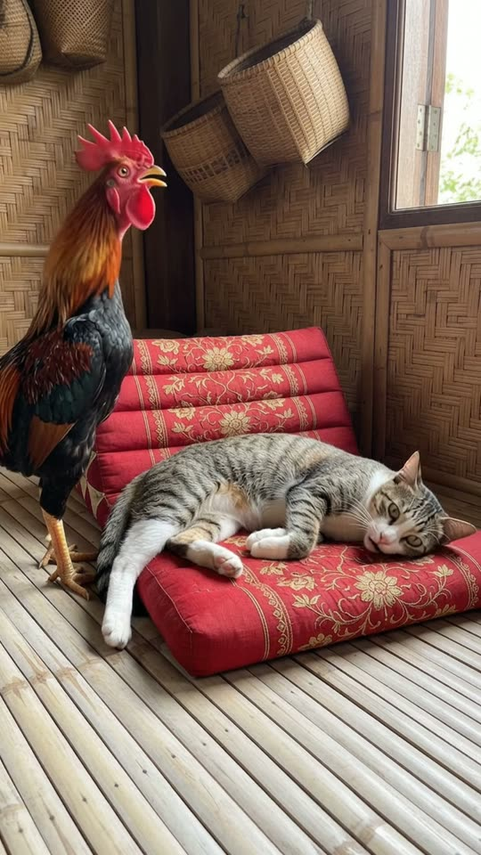
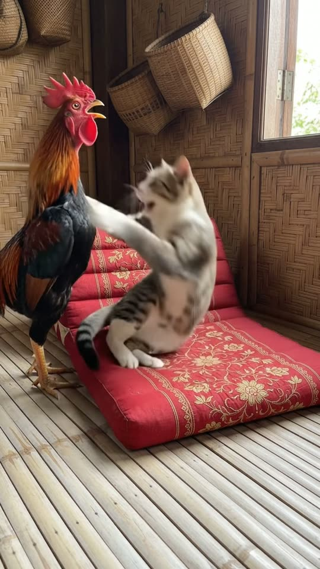
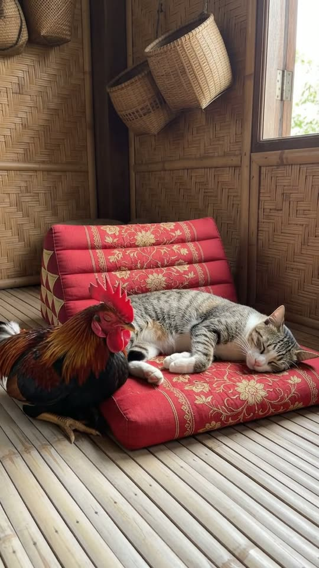

Free prompt pack
She was asleep.He crowed.
A tabby cat is asleep on a red cushion. A rooster stands next to her and crows at full volume, right over her head. Two seconds later he's in a headlock, and three seconds after that she's asleep again. One still image and one prompt, in one take.
Both prompts, in the order I ran them. Pop the rooster's notes before they reach the cat to reveal each prompt. Tap the wall to crow and scatter the z's.
The first frame
Cat asleep, rooster already standing. This image is frame one: a rustic room with rattan walls and a bamboo floor, a tabby-and-white cat asleep on a red embroidered cushion, and a black rooster with an orange neck standing right beside her.
Watch out
Put both animals where the fight starts: the rooster at the end of the cushion, his head above hers. If he starts across the room, the take spends half its time walking him over.
The prompt 146 words
Real photo taken at floor level, close up, inside a rustic room with woven rattan walls and a floor of pale bamboo slats, soft daylight from the right. A red embroidered floor cushion with gold flower stitching runs across the middle of the picture. On it, a real tabby-and-white cat sleeps on its side, eyes closed: grey-brown striped back, white chest and white paws stretched toward the left, its head resting at the right end of the cushion. At the left edge, a real rooster stands tall beside the cushion: glossy black body with a green sheen, long orange-red neck feathers, a large bright red comb and red wattles, yellow legs, its head high near the top of the frame, above the sleeping cat. A round flat woven basket and a bell-shaped wicker basket hang on the wall behind. Natural colour, sharp fur and feather detail.
Crow, headlock, nap
Ten seconds, locked off at floor level. Add the image as the reference, set 10 s, 9:16, 720p and audio on, and paste the prompt whole.
- 0–2 sasleep
- 2–2.6 sthe crow
- 2.6–7 sheadlock
- 7–10 sback to sleep
Watch out
The joke is the last beat, so write it like a move: she lies back down, closes her eyes, hold. And keep the rooster unhurt: eyes closed, chest rising and falling.
Fragments



The prompt 1038 words
FORMAT Real home video filmed from the floor, seen as the finished exported video file: the full picture edge to edge, nothing on top of it. Whatever records the picture is never in frame. One continuous take in real time, no cuts. Vertical frame. The video runs at 24 fps. No frame is repeated. Real time, 1x speed, never slow motion. SCENE In a rustic room with rattan walls, a tabby-and-white cat is asleep on a red cushion while a rooster stands right beside it. The rooster crows at full volume over the sleeping cat. The cat wakes up, jumps onto its hind legs, puts the rooster in a headlock with its front legs and wrestles it down onto the cushion, then holds its head down with one paw until the rooster lies still and quiet. The cat checks it with a tap, lies back down and goes back to sleep. The cat is already asleep and the rooster already standing in the first frame. The take ends with both lying still, the cat asleep and the rooster quiet beside it. REFERENCE IMAGE Use it for the cat, the rooster, the cushion, the bamboo floor, the rattan wall, the baskets and the light. Everything matches it exactly, zero drift, no smoothing. The movement is described below. THE CAT One real domestic cat, a tabby-and-white: a grey-brown striped back and tail, a tabby face with a white muzzle and chin, a white chest, belly and paws, green-amber eyes. It moves like a real cat: quick, low and sure, with the weight of a 4 kg animal; it can stand on its hind legs for a moment when it grabs. The same cat in every frame. THE ROOSTER One real rooster: a glossy black body with a green sheen, long orange-red neck feathers, a large bright red comb and red wattles, yellow legs, a black curved tail. It crows with its neck stretched up and its beak wide open. It flaps hard when grabbed, then gives up and lies still. It is never hurt: no blood, no injury; at the end it lies quietly with its eyes closed, its chest rising and falling. LOCATION MAP We are at floor level, about one metre from the cushion, looking straight at it. The red cushion runs across the middle of the frame on a floor of pale bamboo slats. The rooster stands at the left end of the cushion; the cat lies along the cushion with its head at the right end. Behind them a woven rattan wall with a round flat basket and a bell-shaped wicker basket hanging at the top. FIRST FRAME The rooster at x 0-35%, y 0-58%, standing tall, its head near the top-left corner; the cat asleep on its side on the cushion at x 20-100%, y 40-58%, its head at x 75-95%; the red cushion across x 0-100%, y 50-66%; the bamboo floor from y 66% to the bottom; the rattan wall and the baskets above. Instant read: a rooster standing next to a sleeping cat. No delayed reveal. CAMERA Locked off at floor level: a still frame with no movement at all. It never pans, never zooms, never cuts, never moves closer, never shakes. ACTION TIMING 0–2.0 s — The cat sleeps on the cushion, eyes closed, its side rising and falling; the rooster stands at the left, turning its head in small jerks. 2.0–2.6 s — The rooster stretches its neck up and crows at full volume, beak wide open, right above the cat; the cat's head snaps up, eyes wide, ears flat. 2.6–3.4 s — The cat springs up onto its hind legs and throws both front legs around the rooster's neck in a headlock; the rooster flaps its wings once. 3.4–4.8 s — The cat pulls the rooster down onto the cushion and pins it, the rooster's head tucked under the cat's chest; a short scramble, wings flapping, two loose black feathers. 4.8–7.0 s — The cat sits up on the cushion and keeps one white paw pressed on the rooster's head, on its red comb; the rooster lies on its side at the left end of the cushion, stops struggling and closes its eyes. 7.0–8.4 s — The cat taps the rooster's head twice with its paw, watches it, and sits up straight. 8.4–10 s — The cat lies back down on the cushion on its side and closes its eyes; the rooster lies quietly beside it with its eyes closed. Hold to the last frame. PHYSICS AND SCALE Real size: the cat is about 45 cm long without the tail, the rooster about 60 cm tall standing. Real weight: the cat has to pull hard to bring the rooster down; the cushion dents under both of them. The rooster's flapping is fast and stops; the loose feathers drift down and settle on the floor. One cat, one rooster. No blood. Nothing morphs. NO FULL-FRAME EVENTS Nothing fills the frame: the flapping wings never cover more than half the picture, and the cushion, the floor and the wall stay visible in every frame. LIGHTING Soft daylight from frame-right, even and warm; the rooster's black feathers keep their green sheen; the red cushion stays rich red, never glowing. AUDIO No music, no score, no narration, no subtitles. Quiet room tone, then the rooster's loud crow at 2.0 s, cut off in the middle when the cat grabs it; a short angry "mrrow" from the cat, frantic wing flaps and the scrape of claws on the cushion, a few muffled clucks, then silence and a soft purr from the cat at the end. No words. LOOK Real home video, seen as the finished exported file: crisp detail, natural colour, light compression, no colour grade, no film grain, no lens flare, no slow motion, never CGI, never a cartoon. No camera app interface: no shutter button, no gallery thumbnail, no record button, no icons, no timer, no recording dot, no frame lines. POSITIVE LOCKS One cat, one rooster. No people, no hands. No blood. No captions, no subtitles, no on-screen text, no watermark, no logos, nothing on top of the picture. ONE CAT. ONE ROOSTER. NO CUTS. NO ZOOM. NO SLOW MOTION. NO MUSIC.
Rule 01
The ending is the joke
A fight is easy. What makes people send it is her going straight back to sleep. Give the ending its own beat and a hold.
Rule 02
Weight makes it real
A 4 kg cat has to pull to bring a rooster down, and the cushion dents under both. Write the effort, not just the move.
Rule 03
Funny, not cruel
No blood, no injury, eyes closed and breathing at the end. The reel stays up and the comments stay about the cat.
That's the whole build
Now go wake upthe wrong animal.
If yours works, send it over. I read every DM and the good ones end up on the account.
@martiiifons